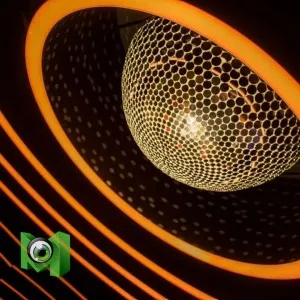
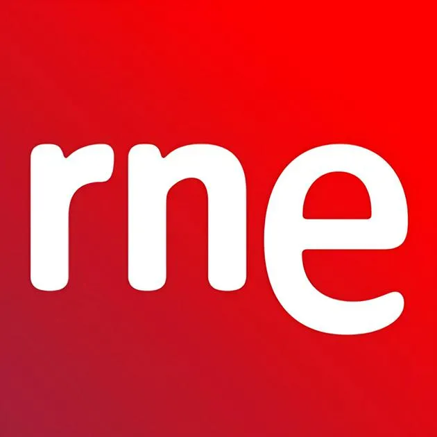
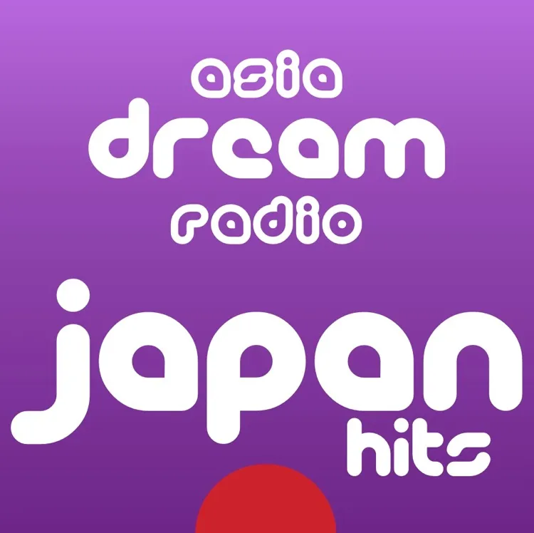
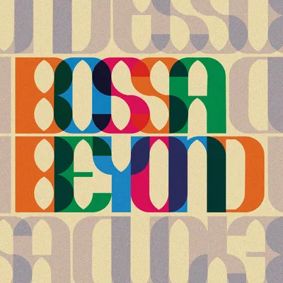
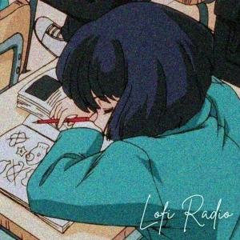

MBS
NowPlaying Info
/

50
/

50
MBS
KISS FM
NHK R1 Osaka

RadioMonster Evergreens
Los40 Classic

Radio Nacional Española
CBC Radio ONE Vancouver
weeb anime

asia dream radio japan hits
Jazz de Ville Chill
Jazz de Ville Groove
RPGN Game Music Radio

SomaFM Bossa Beyond

Lofi Radio
System message output below
system messages appear here
See you again!